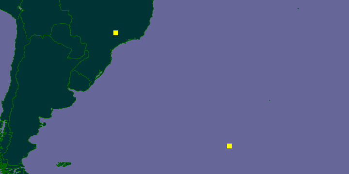
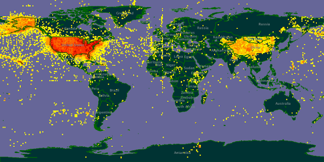
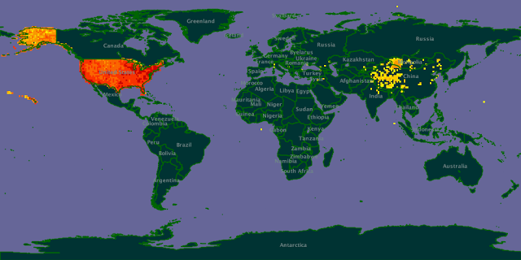
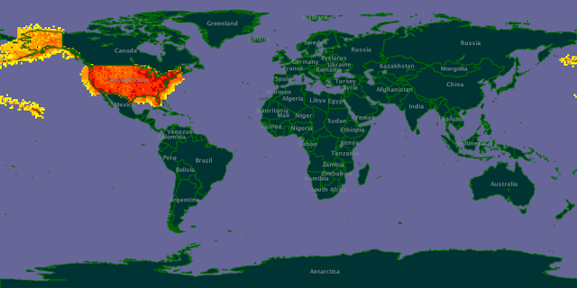
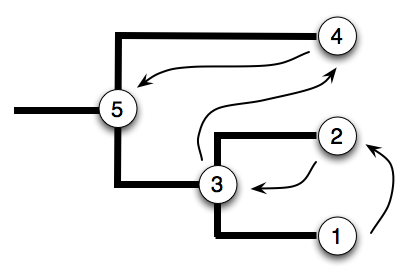
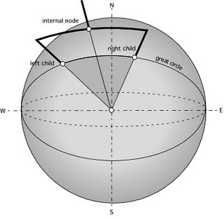
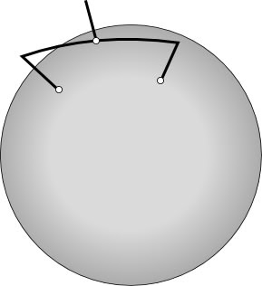
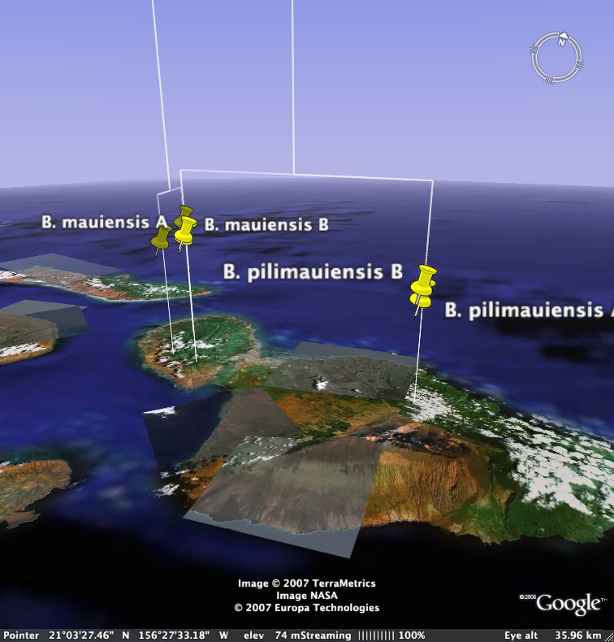

To follow the examples in this session you will need a Google account (to use Google Fusion tables) and you will need to download Google Earth.
The availability of easy to use online maps (e.g., Google Maps), together with the relative easy of geotagging data using GPS has resulted in an explosion of mapping services. These can be used to display spatial data, or to navigate through data using geography.
There are numerous alternatives to Google Maps and Google Earth. Perhaps the best known is OpenStreetMap, which is a free, collaboratively edited map of the world (see video below for an animation of one year's edits).
Other mapping projects include Polymaps, and spatial analysis tools such as CartoDB.
GBIF currently has over 300 million data records, or which 275 million have geographic coordinates, meaning that they can be placed on a map. The data is available from http://data.gbif.org.
To get an idea of the impact of GBIF data you can browse the Mendeley group "GBIF Public Library":
GBIF Public Library is a group in Biological Sciences on Mendeley.
A side effect of aggregating and displaying huge amounts of geographic data, for example, in GBIF is the discovery of errors. Although errors can be frustrating, exposing them means they can be fixed. For example, in 2008 I discovered errors in the GBIF map for Pagellus erythrinus). The map below shows two sets of points. The points were the localities displayed by GBIF, which seemed odd given that this is a Mediterranean fish. However, all that is needed to move the fish to where it might be expected ( symbols) is to swap the latitude and longitudes.
Another example is of a frog that ended up in the Atlantic Ocean. GBIF originally displayed the following map for the frog Boophis periegetes:
In this case, one record had latitude and longitude swapped, the other had the longitude mistakenly recorded as being from the Western Hemisphere, instead of the Eastern Hemisphere. Once these are corrected, the frog records return to Madagascar:
The examples above are fairly small scale, but GBIF is a huge database so cleaning it requires some impressiv eprocessing power. For details see Here be dragons - mapping occurrence data which explains how the maps below were generated:

Map 1: Verbatim (unprocessed) occurrence data coordinates for the USA
Map 2: Results of current data portal processing for occurrences in the USA
Map 3: Results of new processing workflow for occurrences in the USA
The KML file frogs.kml contains the locations of recently described frog species (obtained by data mining the Amphibia Species of the World web site). Load this file into Google Earth. Where are the new frogs species being found? Are there any records you might be suspicious of?
Now that we know where the new species of frogs are being found, we can ask whether these new species in conservation areas or not (presumably being in a conservation area increases there chances of avoiding extinction). To answer this question we need to be able to plot conservation area on Google Earth.
 One source of KML files for Google Earth is protectedplanet.net. If you go to the site and either browse or search for protected areas you can download a KML file of a conservation area (you have to sign in to download data).
One source of KML files for Google Earth is protectedplanet.net. If you go to the site and either browse or search for protected areas you can download a KML file of a conservation area (you have to sign in to download data).
As a starting point, here is the KML file for the Ranomafana National Park in Madagascar. If you download this file and open it in Google Earth you will be able to see whether any recently described frogs are in that protected area.
GBIF data comes from museum collections and observations of living organisms. Inevitably this data will be affected by sampling bias (organisms won't be found where people haven't looked) as well as digitisation bias (not every museum collection or database of observations). There may also be data that hasn't been added to GBIF. In this exercise we will explore Flickr as a source of distributional data. Flickr contains a wealth of images of organisms, many tagged by their scientific name. Many of these images are geotagged (e.g., they were taken with a camera or phone that has GPS built in), which means we can place them on a may. Given that Flickr exports KML files, it is easy to add these images to Google Earth and compare them with GBIF data.
As an example, we can get images for the spider Leucauge magnifica by searching Flickr for the tag "leucaugemagnifica". Grab the search results as a KML file (you should see a link near the bottom of the page) and load this in to Google Earth.
Now go to the GBIF data portal (http://data.gbif.org) and search for Leucauge magnifica (if you are impatient then click on http://data.gbif.org/species/2151499/). You can get the GBIF results as a KML file, so download that file and add it to Google Earth.
Are the Flickr photos within the distributional range from GBIF? If not, how would you interpret this?
Repeat this exercise for another organism that you can find on Flickr and in GBIF.
For an example of exploring this further see Where is the "crowd" in crowdsourcing? Mapping EOL Flickr photos (source code on GitHub).

Google Fusion tables provide tools to visualise data, and makes it easy to create maps.
Google provides a fusion table tutorial using a biological data set, in this case catepillars collected in Costa Rica. Work through this example to learn how to use fusion tables.
In this example we will use Google Fusion Tables to create a distribution map for recently discovered mammals. Go to Google Docs and create a new table. Populate this with data (say, 10 rows) from the paper Global trends and biases in new mammal species discoveries, by Reeder et al. (2007), Occasional Papers Museum of Texas Tech University, 269:1-35 PDF.
Maps display data in space, but that spatial arrangement may change over time. There are a number of tools we can use to explore this. Google Earth itself supports timelines, as we can see with the avian flu example. Another useful tool is timemap, which creates a linked timeline and map display. For an example see the Live Earthquake Maship.
As an example, below is a timemap for swine flu. By scrolling through the timeline you can see the changes in geographic distribution of this disease.
We can also use a timemap to visualise the growth of knowledge in a particular area. In the previous lecture we plotted an RSS feed for barcoded amphibians on a Google Map. An alternative display that combines a timeline and map is available at http://darwin.zoology.gla.ac.uk/~rpage/timemap/ (note that this timemap has not been updated in a while).
Google and the University of Maryland have built a map of how forest cover has changed from 2000-2012 based on an analysis of 654,178 Landsat.
Global changeAn obvious use of a map is to display the spatial distribution of some data, for example the occurrences of a particular taxon. But we can also use a map to explore data. For example, if we wanted to find taxonomic papers related to Australian species, we could do a Google search that included the term "Australia". Alternatively, if we had a database of taxonomic descriptions, and these where geotagged (for example, if a paper mentions the latitude and longitude of a locality), then we could do a spatial query. For example, we could define the "bounding box" of Australia as the rectangle that encloses that continent. We could then search our database for papers with localities inside that bounding box. For an example of this see http://biostor.org/maps.
The part of the map being displayed automatically defines a bounding box, so we could implement a simple spatial browser that shows us the taxonomic papers (or species, or whatever object is of interest) for just that region.
Around 2007 several researchers started exploring displaying phylogenies on Google Earth (see Google Earth phylogenies for some links, and David Kidd's paper Geophylogenies and the Map of Life, http://dx.doi.org/10.1093/sysbio/syq043 for a review. Here we will look at some examples, and create a geophylogeny.
To draw a tree on a computer screen we need to locate the nodes in the Euclidean space, in other words, each node needs to be assigned x and y coordinates. The x and y coordinates for the leaf nodes are straightforward to work out. The coordinates for an internal node is based on those of its descendants. Hence, in order to work out where to put the internal nodes we need to first visit their descendants. Walking around a tree in this order is called a postorder traversal.
Below we've put the tree on a 3 × 2 grid (note that the origin of the coordinates is the top left). We are going to evenly space the internal nodes along the x-axis, and the leaves along the
Now that we can draw trees, we need to translate the method for computing simple x-y Euclidean coorindates into latitude and longitude. For details on how to do this see, for example, Earth not flat - official. The shortest path between two points on a sphere is not a straight line but a great circle, so when we compute the coordinates of an internal node we need to find the great circle upon which the two descendant nodes fall, and then find the midpoint of the arc between the two child nodes:
 | Avian flu virus |
David Kidd has created an ArcGlobe visualisation for terrestrial mammals.
This is just one of a series of videos David has created.
To create a geophylogeny we need a phylogeny where all the taxa have latitude and longitude data. For this exercise we will use the Banza example discussed at Google Earth phylogenies, based on data from Molecular phylogeny of Banza (Orthoptera: Tettigoniidae), the endemic katydids of the Hawaiian Archipelago (http://dx.doi.org/10.1016/j.ympev.2006.04.006).
Below is a NEXUS file (a format widely used in phylogenetics) for the Banza that has geographic location encoded in the taxon name (the part beginning lat=).
To convert this into KML go to http://iphylo.org/~rpage/phyloinformatics/treeviewer/tkml.php and paste the NEXUS file into the form. The web site will create a KML file and your browser will download this file (called tree.kml). Open it in Google Earth. It should look something like this:
Given what we know about the Hawaiian islands, how would you interpret this geophylogeny?
In this session we've focussed on data that is georeferenced, that is, we know where on the Earth's surface it was located. For a lot of legacy data we will not have GPS coordinates. Tools such as BioGeomancer (2012-01021 link seems to be broken, try https://sites.google.com/site/biogeomancerworkbench/)aim to take a verbal description of where an observation was made (e.g., "5 mi NW of Glasgow") and convert that into latitude and longitude.
Tools to create geophylogenies are in their infancy, and not widely used. It would be interesting to think about how to analyse geophylogenies, for example, can we make inferences about biogeographic processed base don how many lines cross particular geographic features? Can we compare heights of lines (a function, say, of molecular evolution) to infer whether geographic patterns are the same age?
Creating geophylogeny files isn't terribly straightforward, it would be nice to have a tool that made this simpler, pehraps by being able to take a tree and a list of names and coordinates and automatically merging the two.
(see also Phyloinformatics Course on Mendeley)